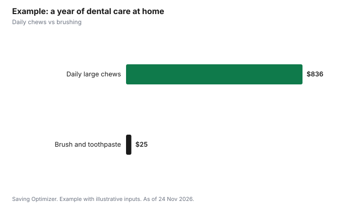

Pets · Canada
Do Dental Chews Save Money on Pet Dental?

Dental chews can help, but they're not cheap and they don't replace brushing or vet cleanings. Greenies Large dental treats were $54.99 for 24 at PetSmart, about $2.29 each. One a day is about $836 a year. Choose chews with the VOHC seal, count the calories, and brush when you can.
Key takeaways
- Look for the VOHC seal; it means the product met a plaque or tartar standard.
- Greenies Original Large: $54.99 for 24 at PetSmart, about $2.29 a chew (checked 24 Nov 2026).
- Each large chew is 139 calories; count it in your dog's diet.
- Brushing is the cheapest effective home care.
- Chews don't replace vet exams and cleanings.
Cost per chew
| Product | Price | Per chew | Per year, daily |
|---|---|---|---|
| Greenies Original Large, 24 count | $54.99 | About $2.29 | About $836 |
Alternatives
- Brush daily with pet toothpaste.
- Use a VOHC-accepted water additive or dental diet if your vet suggests it.
- Give a chew a few times a week instead of daily.
- Choose the right size for your dog.
- Book regular vet dental checks.

Chews vs brushing: an example
Example: daily large chews cost about $836 a year. A toothbrush and pet toothpaste cost an example $25.
See pet dental costs and dog treats and chews on a budget.
Sources
- PetSmart Canada, Greenies Adult Large Dog Dental Treats, checked 24 Nov 2026.
- Veterinary Oral Health Council, VOHC accepted products, checked 24 Nov 2026.
Frequently asked questions
Do dental chews work?
Chews with the VOHC seal met a standard for slowing plaque or tartar.
How much do Greenies cost in Canada?
Large were $54.99 for 24 at PetSmart, about $2.29 each.
Can dental chews replace brushing?
No. Brushing works better and costs less.
Do dental chews replace vet cleanings?
No. Your vet still needs to check your pet's teeth.
Are dental chews fattening?
They have calories; a large Greenies chew is 139 kcal.
Researched and drafted with AI assistance and fact-checked against official Canadian sources. How we create content.
Note: Not veterinary advice. Amounts are examples. Education only.